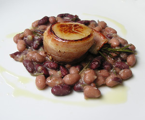

Bohnen mit Jakobsmuscheln
5 von 6300 g Bohnen über Nacht einweichen, abgiessen, waschen und mit frischem Wasser bedecken und aufkochen. 3 ungeschälte Knoblauchzehen, eine geschälte und halbierte Kartoffel, eine ganze Tomate sowie eine Stange Staudensellerie beigeben. Mit 3 Blätter Lorbeer, einigen Thymianzweigen und frischem Rosmarin würzen und 3/4 bis eine Stunde auf kleiner Stufe gar kochen. Etwas Kochwasser auffangen und der Rest abgiessen. Die Kartoffel, die geschälte Tomate sowie die drei von der Schale befreiten Knoblauchzehen mit einer Gabel zu einem Brei verarbeiten. Das übrige Wasser sowie die Bohnen dazu geben. Mit Salz, Pfeffer, Olivenöl und etwas Essig abschmecken. Die mit einer Scheibe Bratspeck umgebenen Jakobsmuscheln scharf anbraten und mit den Bohnen anrichten, etwas Olivenöl und Zitronensaft darüber träufeln.
